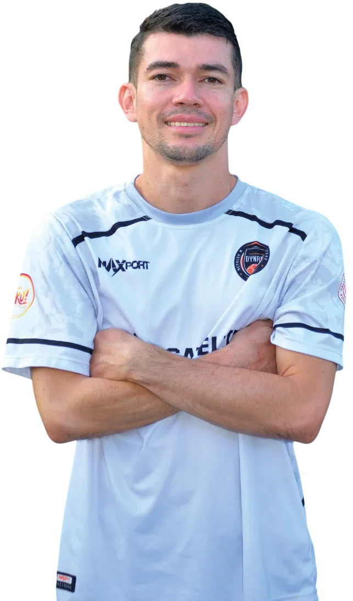
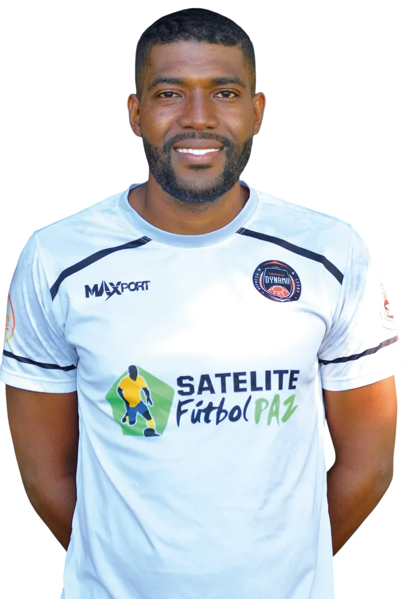
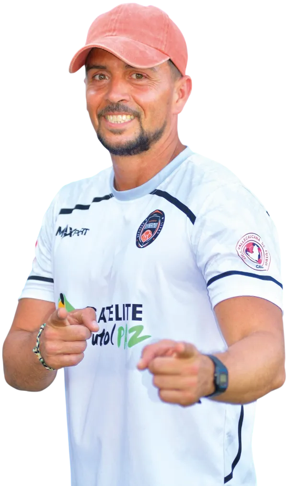
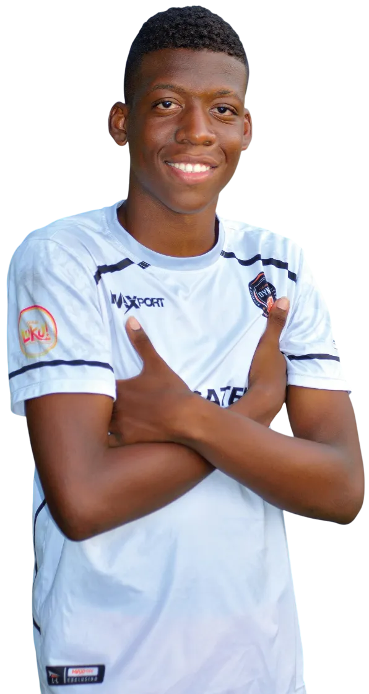

Nuestro Equipo Técnico
Descubre al equipo técnico del Club Deportivo Dynamo, compuesto por profesionales en áreas clave del fútbol y el desarrollo personal. Filtra por categorías para conocer más sobre cada integrante.

Oscar Aaron Lucumi
Directivo Cofundador - DT Técnico Sub-15
Deymer Vásquez
Directivo Cofundador - DT Categoría Sub-16
David Andrade
Directivo Cofundador - DT Categoría Sub-14
Álvaro Folleco
Coordinador Administrativo
Leidy Jovana Lucumi
Fisioterapeuta

Luis Eduardo Vargas
Preparador de Arqueros

Jhon Jairo Vasquez
Formador
DT Categoría Sub-07 A / Sub-08 A
Liujohan Millan
Formador
DT Categoría Sub-12 B / Sub-16 B
Gustavo Cajiao
Formador
DT Categoría Sub-11 A / Sub-11 B

Jhoan Steven Porras
Formador
DT Categoría Sub-10 B

Breiner Ortiz
Formador
DT Categorías Sub-10 / Sub-13

Juan Diego Sarria
Formador
DT Categoría Sub-09

Yeison Mosquera
Formador
DT Categoría Sub-06